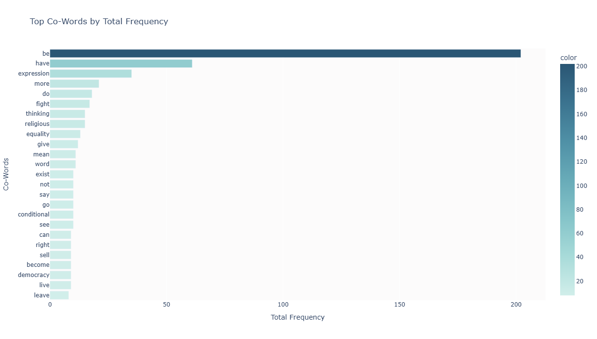
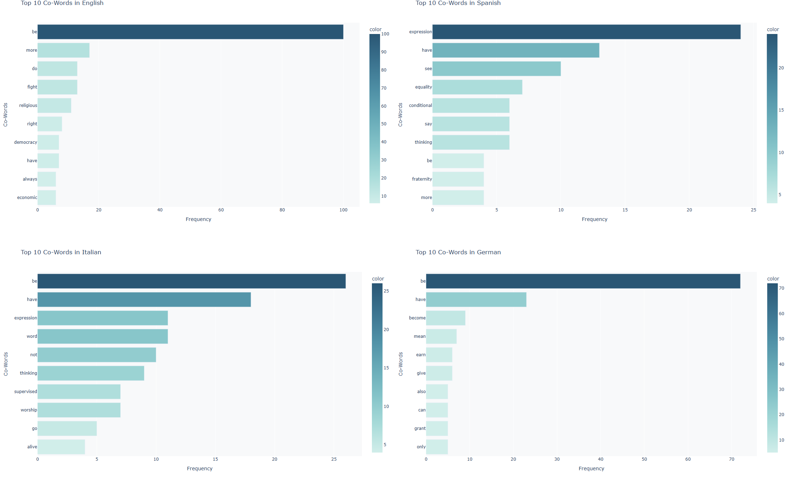

Semantic Moodboard of "Freedom"
Personal Project | 2025
The Point
I wanted to explore what freedom means across cultures.
As an American, I’ve noticed how often we use “freedom” in vague, broad, and sometimes contradictory ways. My European friends often tease me about it—so I thought: let’s actually look at how “freedom” is used in different languages. Where do definitions across languages agree, and where do they collide?
Why Freedom?
Well, to me it feels like one of the most emotionally charged words we use, and this has only increased in the age of protests, lockdowns and widespread political polarization. Freedom feels like contested ground.
Approach
I wanted to scale gradually—starting with clean data and controlled analysis before diving into messier, real-world language. I gathered sentences from native speakers, focusing on the five languages I understand: English, German, Spanish, Italian, and Swedish.
I started with Tatoeba.org, a database of sentences translated by native speakers. Tatoeba has limitations—short, context-less sentences—but the advantage is availability of data. Plus, it supports exact keyword search. I wrote a small script using Selenium to automatically gather sentences across five languages, with throttling and respectful delays.
After gathering the data, we can then analyze it and hopefully find some insights
My assumptions for English, freedom would sound:
- Militaristic verbs: fight for freedom, defend our freedom, sacrifices for freedom
- Rights discourse: free speech, second amendment
- Demands: more freedom, retain existing freedom
- Emotionally intense sentiment, especially around loss or struggle
Process & Methods
- Scraped Tatoeba for translated sentences of “freedom,” filtering by minimum sentence length.
- Deduplicated semantically using sentence-transformers and cosine similarity to avoid near-duplicate noise.
- Performed dependency parsing with SpaCy, extracting relationships: subjects, objects, modifiers, prepositional links, and coordinated terms.
- Translated co-words into English via DeepL, caching results for performance.
- Exported a unified CSV for analysis and visualization.
Tools
- Selenium: to gather native-level sentence data from Tatoeba
- SpaCy: to extract syntactic and semantic relationships between words
- Hugging Face Transformers: to score sentence tone across multiple languages
- Tableau: for interactive dashboards across dimensions like POS, co-word, sentiment
Why dependency parsing matters:
Some keyword-based text analysis just looks for nearby words (window-based co-occurrence), but depedency parsing lets you extract grammatically meaningful relationships.This means our analysis provides greater depth and meaning than simply looking for the words that are nearby.
Roughly speaking, this is similar to the difference between early AI and modern LLMs. In the past, AI also looked for words that appeared near each other and used that for predictions, nowadays LLMs are so much better because they model the relationships between words, not just what is nearby.
Findings & Reflection
On “be” as a cross-linguistic anchor:
We can see that the word "be" is by far the most common co-word across three of the four languages. This likely reflects phrases like "freedom is important", "freedom is a right", and so on — framing freedom as a state of being or existence. It seems we anchor freedom in identity and condition, regardless of the language.

This heatmap shows the frequency of co-words across different languages. Darker colors indicate higher frequency of usage.
English’s action-oriented framing:
English stands out for its heavy use of words like "fight", "more", and "do". In fact, English accounts for over 80% of the uses of "fight" and "more", hinting at a conceptualization of freedom as something to be expanded and actively fought for. The strong presence of "do" further suggests that English frames freedom in terms of action — "freedom to do X, to do Y" — a subtle but important difference.

This bar chart displays the most frequently used co-words with 'freedom' across all languages combined.
Spanish and Italian: expression as a key theme:
One of the most striking patterns is how frequently "expression" appears in Spanish, often as part of the phrase "la libertad de expresión". Italian shows this to a lesser extent too, suggesting that this phrase is culturally more prominent in Romance languages. This could hint at the values woven into the fabric of these languages’ discourse around freedom.

This table shows the raw aggregated data used to create the visualizations. Each row represents a unique co-word and language combination with its frequency count.
Challenges & Lessons
- Sadly, there wasnt enough data on Swedish for a meaningful comparison, so I had to drop it
- A bit naively I thought I could use the same semantic analysis with SpaCy on all languages, but it turned out that German needed its own protocol since its grammatically pretty distinct. I think I would get even more accurate results with dedicated protocols for Spanish, English and Italian, but its still on my todo list.
- I pulled a over a thousand sentences for Tatoeba, but for much more depth I would love to access data from varying sources, and preferably thousands of entries per language.